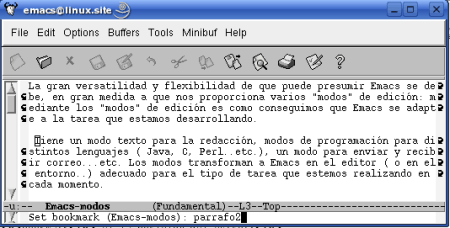
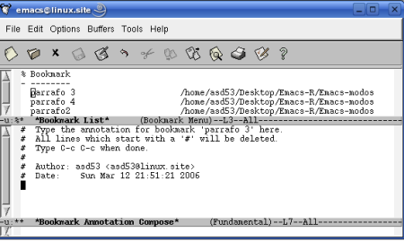

11. Bookmarks
Pág.Anterior | Índice | Pág.Siguente
Cuando se está trabajando con varias ventanas al mismo tiempo, puede resultar complicado recordar en qué lugar nos encontrábamos la última vez que estuvimos en un determinado buffer.
Utilizando bookmarks, ( "puntos"), se facilita enormemente la tarea de "regresar al punto que dejamos" el archivo.
Cuando creamos un bookmark, Emacs crea el archivo .emacs, en el directorio pernonal. En dicho archivo Emacs guarda, cada vez que abandonamos la aplicación, los bookmarks creados.
Un aspecto que debemos tener muy en cuenta es que los bookmarks marcan una posición en el archivo, no en el texto.
Lo anterior quiere decir que , si eliminamos un texto marcado, el bookmark permanece. De iguál forma, si insertamos texto de modo que el texto marcado, el bookmark no se desplace, conservando su pòsición en el archivo.
Los bookmark son creados y guardados por cada usuario. Cuando varios usuarios acceden a la misma documentación, cada uno de ellos puede utilizar sus propios bookmark, sin interferir en los demás.
En el caso de la creación y gestión de bookmark debe preferirse la utilización de las opciones de menú antes que la utilización de la linea de comandos.
La gestión de bookmark puede realizarse, en casi su totalidad, através de las opciones del menú:
Edit-->Bookmarks
11.1 Creación de un nuevo bookmark.
Pág.Anterior | Índice | Inicio Página | Pág.Siguente
Para crear un bookmark el la posición del cursor:
- Opción de menú : Edit--> Bookmarks--> Set Bookmark
- Comando : C-x r m
- Comando "largo" : M-x bookmark-set <Enter>
Al ejecutar el comando, Emacs nos pide que introduzcamos el nombre del bookmark que deseamos crear. Emacs nos sugiere un nombre (entre paréntesis), el cual, si se trata del primer bookmark creado, suele coincidir con el nombre del archivo.
Los nombres de bookmark pueden tener cualquier longitud y contener espacios.
|  |
11.2 Desplazarse a un bookmark.
Pág.Anterior | Índice | Inicio Página | Pág.Siguente
Para desplazarnos a un determinado bookmark :
- Opción de menú : Edit--> Bookmarks--> Jump to Bookmark
- Comando : C-x r b
- Comando "largo" : M-x bookmark-jump <Enter>
Cuando operamos através de la opción del menú, se nos mostrará una ventana con los bookmarks disponibles.
Con el ratón seleccionamos el deseado.
Cuando realicemos el desplazamiento através de comando, Emacs nos pedirá que introduzcamos el nombre del bookmark al que queremos desplazarnos.
Efectuada la operación, Emacs situará el cursor en el bookmark especificado.
11.3 Renombrar Booksmarks.
Pág.Anterior | Índice | Inicio Página | Pág.Siguente
Para cambiar el nombre a un bookmark :
- Opción de menú : Edit--> Bookmarks--> Rename Bookmark
- Comando "largo" : M-x bookmark-rename <Enter>
Cuando operamos através de la opción del menú, se nos mostrará una ventana con los bookmarks disponibles.
Con el ratón seleccionamos el que queremos renombrer.
Emacs nos mostrará un mensaje en el mini-buffer, pidiéndonos la introducción del nuevo nombre: New name:
Cuando realicemos el cambio de nombre através de comando, Emacs nos pedirá que introduzcamos el nombre del
bookmark al que queremos cambiar el nombre ( Old Bookmark name:).
Tras señalar el bookmark a renombrar, Emacs nos pedirá que introduzcamos el nuevo nombre ( New name:).
11.4 Eliminar bookmarks.
Pág.Anterior | Índice | Inicio Página | Pág.Siguente
- Opción de menú : Edit--> Bookmarks--> Delete Bookmark
- Comando "largo" : M-x bookmark-delete <Enter>
Cuando realizemos la eliminación através de la opción del menú, se nos mostrará una ventana con los bookmarks disponibles.
Con el ratón seleccionamos el que queremos eliminar.
En la eliminación através de comando, Emacs nos pedirá que introduzcamos el nombre del bookmark a eliminar.
11.5 Otros comandos realtivos a bookmarks.
Pág.Anterior | Índice | Inicio Página | Pág.Siguente
Se relacionan una série de comandos que pueden ser de utilidad en el trabajo con bookmarks:
- Opción de menú : Edit--> Bookmarks--> Save Bookmarks
- Comando "largo" : M-x bookmark-save <Enter>
Guarda todos los bookmarks en el archivo por defecto; normalmente ~/.emacs.bmk.
- Opción de menú : Edit--> Bookmarks--> Save Bookmarks As..
- Comando "largo" : M-x bookmark-write <Enter>
Guarda todos los bookmarks en un determinado archivo. Mediante un mensaje en el mini-buffer, Emacs nos solicitará que introduzcamos el archivo en el cual deseamos guardar los bookmarks.
- Opción de menú : Edit--> Bookmarks--> Insert Location
- Comando "largo" : M-x bookmark-insert-location <Enter>
Inserta, en la posición del cursor, el path de un determinado bookmark.
- Opción de menú : Edit--> Bookmarks--> Insert Contents
- Comando "largo" : M-x bookmark-insert <Enter>
Inserta, en la posición del cursor, el contenido (¡todo el contenido!) de un archivo asociado a un determinado bookmark.
Sugerencia: Puede facilitarnos la división de la tarea en diversos archivos para, posteriormente, componer el archivo final definitivo.
- Opción de menú : Edit--> Bookmarks--> Load a Bookmark File
- Comando "largo" : M-x bookmark-load <Enter>
Importa bookmarks desde un determinado archivo. Mediante un mensaje en el mini-buffer, Emacs nos solicita que introduzcamos el nombre del archivo que contiene los bookmarks a importar.
11.6 Lista de bookmarks.
Pág.Anterior | Índice | Inicio Página | Pág.Siguente
Para la gestión de los bookmarks disponemos de una Lista de Bookmarks, similar a la de buffers, que se nos presenta en el buffer *Bookmark List* .Como podremos observar, varias de las acciones que se describirán en este apartado pueden realizarse através de opciones de menú y/o de comandos descritos en los anteriores apartados.
Para acceder a la *Bookmark List* :
- Opción de menú : Edit--> Bookmarks--> Edit Bookmark List
- Comando : C-x r l
- Comando "largo" : M-x bookmark-menu-list <Enter>
Para la gestión de bookmarks atraves de la Lista utilizaremos los siguientes comandos:
| <Enter> | Nos muestra el archivo que contiene el bookmark, con el cursor situado en la posición marcada. |
| f o j | Como en el caso anterior |
| d o C-d | Marca un bookmark para su eliminación. En la primera columna aparece el signo D |
| k | Marca un bookmark para su eliminación. En la primera columna aparece el signo D |
| u | Elimina las marcas de los bookmarks. |
| x | Elimina los bookmarks marcados con d ; k o C-d |
| s | Guarda todos los bookmarks. |
| r | Renombra el bookmark. Emacs nos solicitará el nuevo nombre. |
| t | Oculta o visualiza los paths de los archivos de los bookmarks de la lista. |
| w | Muestra, en el mini-buffer, la localización del archivo del bookmark.. |
| m | Marca bookmarks para la visualización de sus archivos en múltiples ventanas. En la primera columna aparece el signo > |
| l | Carga un archivo .emacs.bmk diferente al actual |
| A | Muestra todas las anotaciones [ Las anotaciones en bookmarks se tratan en el siguiente apartado.] |
| a | Muestra las anotaciones del bookmark actual [ Las anotaciones en bookmarks se tratan en el siguiente apartado.]. |
| e | Edita o crea una anotación en el bookmark actual.[ Las anotaciones en bookmarks se tratan en el siguiente apartado.]. |
| q | Sale de la Lista de bookmarks. |
Para moverse dentro de la Lista de bookmarks pueden utilizarse los mismos comandos utilizados para moverse en la Lista de buffers, aunque lo mas eficiente es la utilización del ratón.
11.7 Anotaciones en los bookmarks.
Pág.Anterior | Índice | Inicio Página | Pág.Siguente
En los bookmarks pueden realizarse todo tipo de anotaciones.
La forma más fácil de realizar una anotación es desde la Lista de bookmarks. El proceso seria el siguiente:
- Todas la lineas que comiencen con el signo # pueden ser eliminadas.
- Una vez finalizada la redacción, se guarda la anotación y se sale de la ventana mediante el comando C-c C-c
- Emacs no guarda automaticamente las anotaciones cuando se sale de la aplicación.
- Emacs añade un * al principio del nombre de los bookmarks anotados, en la Lista de bookmarks.
Abrir la Lista de bookmarks ; situar el cursor en la linea del bookmark en el que se desea realizar la anotación y teclear el comando e ( Editar o crear una anotación en el bookmark actual ).
Emacs abre una nueva ventana, *Bookmark Annotation Compose* , en la que se redactarán las anotaciones de acuerdo con unas sencillas reglas, algunas de las cuales se muestran en la misma ventana..
|  |
Las citadas reglas de redacción de anotaciones son:
Como vimos en la sección anterior, para ver la anotación de un determinado bookmark utilizaremos el comando
a .
Para visualizar todas las anotaciones de la Lista de bookmarks utilizaremos el comando A.
Cuando nos desplacemos a un bookmark o nos movamos a un archivo marcado desde la
Lista de bookmarks , las anotaciones se nos mostrarán en una ventana de solo-lectura.
Si el archivo marcado se abre por otro precedimiento que no sea através de la Lista de bookmarks , las anotaciones no se mostrarán.